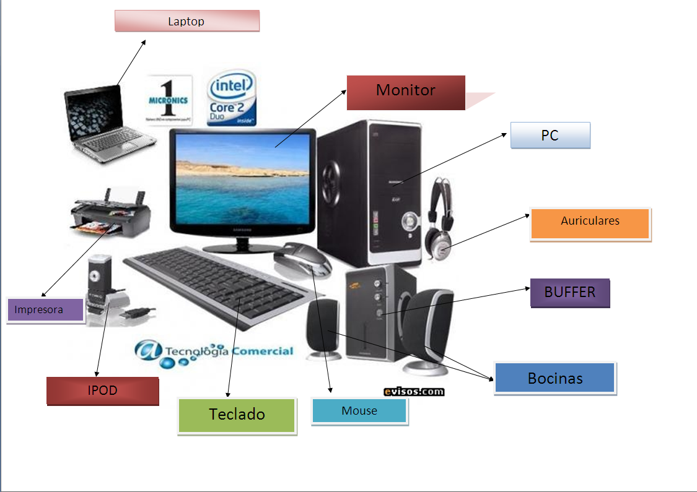

Arquitectura
ARQUITECTURAS DE COMPUTO
Es el diseño conceptual y la estructura operacional fundamental de
un sistema de computadora. Es decir, es un modelo y una descripción funcional de los
requerimientos y las implementaciones de diseño para varias partes de una computadora,
con especial interés en la forma en que la unidad central de proceso (UCP) trabaja internamente
y accede a las direcciones de memoria.
Para ingresar a la UNIDAD 1 da click aqui
Para ingresar a la UNIDAD 2 da click aqui
Para ingresar a la UNIDAD 3 da click aqui
Para ingresar a la UNIDAD 4 da click aqui
